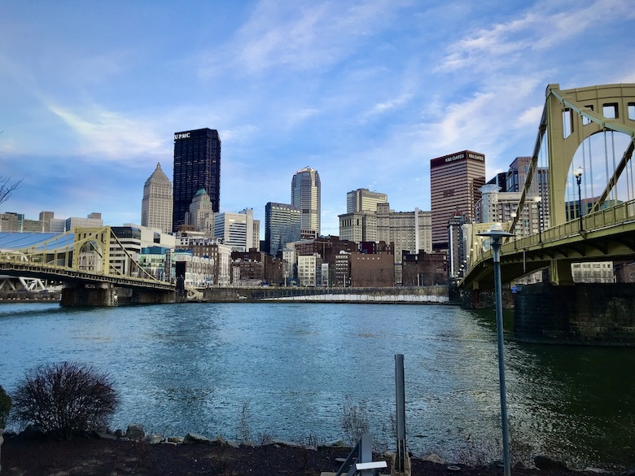
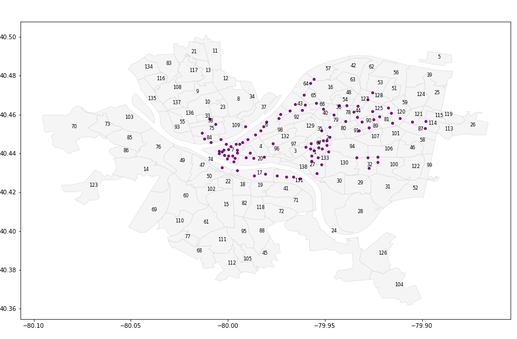
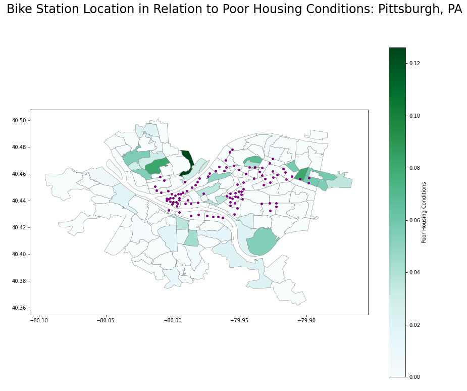
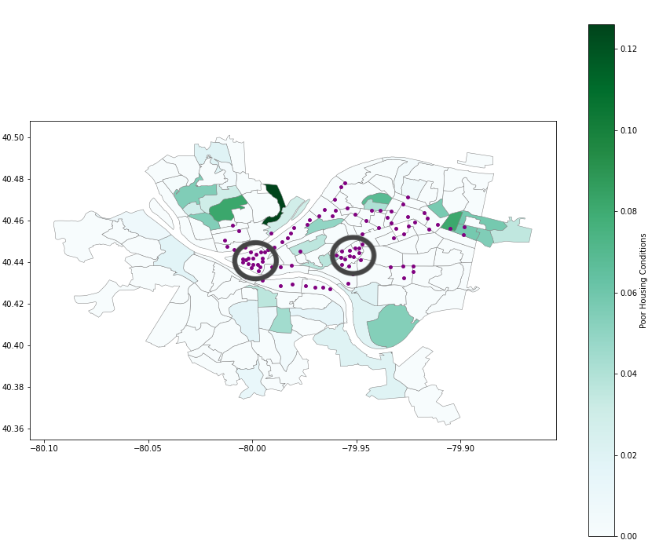
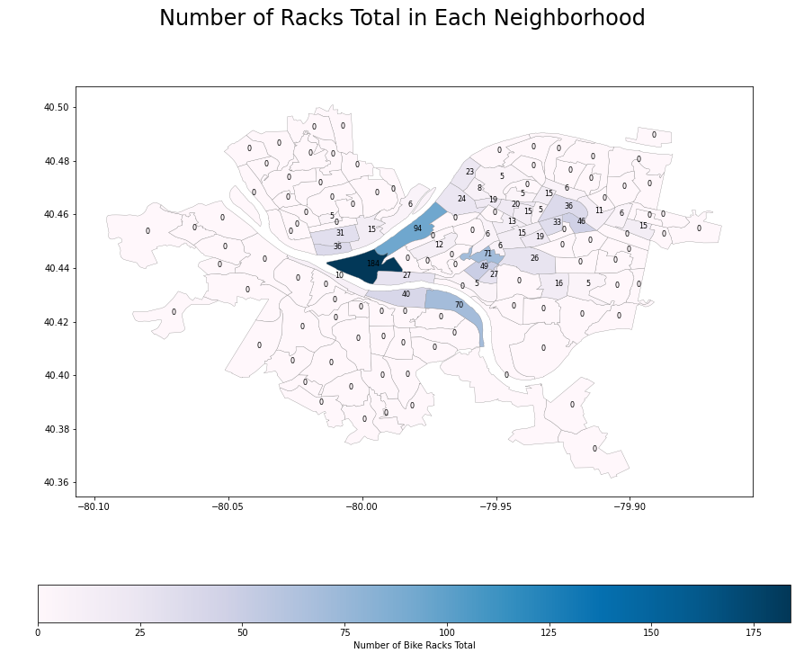

Having a reliable mode of transportation is necessary for people to maintain jobs. Sustainable and accessible mobility is imperative to the economic growth of a city. In many cities, bike sharing programs are becoming a sustainable and accessible option. But it is necessary to investigate the sustainability and accessibility of the city's bike sharing program. After spending a majority of my spring semester researching the public bike sharing system in Manizales, Colombia, I figured it would be worthwhile to become familiar with the bike sharing program in Pittsburgh. All the code and the corresponding Jupyter Notebook can be found on my GitHub.
The HealthyRide Bike Sharing Program came to Pittsburgh in May 2015 and have been increasing the number of bike stations throughout Pittsburgh ever since. There are quite a few articles about the location of these bike stations in relation to the income of neighborhoods. Some articles (from city news sites or blogs) mention that there are not enough stations in the lower income neighborhoods in Pittsburgh, but these articles also date from 2018. These articles from 2018 also identify that HealthyRide is planning on adding up to 175 stations and that HealthyRide is working on adding more stations in lower income neighborhoods [2, 3]. However, these articles have no dataset to back up their claims explicity. To address the claims in these articles [2, 3], I have done some data analysis to see if HealthyRide stations are located in lower income neighborhoods and the station's bike capacity. From analyzing the data from the Western Pennsylvania Regional Data Center (WPRDC), there are currently 100 stations and 1085 total bike racks available from all the stations combined as of Q1 2020 [1]. I have plotted the bike station locations below (represented as purple dots) from the coordinates provided in this dataset using the base map as the Census Tracts from 2010 for Allegheny County.

Bike sharing programs come with a lot of infrastructure, especially if the bikes need to be returned to a station by the end of a ride (not "dockless" program). Most bike sharing programs also require the user to download a smart phone application to register and rent the bike. As with any other bike sharing program that is not "dockless", the location to place a bike station or "rental hub" remains difficult. Researchers have applied machine learning algorithms to optimize the distance between any two given bike stations or to optimize the accessibility of the bike stations between lower income neighborhoods and higher income neighborhoods.
A lot of research has been done on the bike sharing system in Manizales (Manizales En Bici) to identify optimal station locations and optimal accessibility amongst the socioeconomic groups. This program is a public bike sharing programs that is free for the users after they register for the system. It is important to note that Manizales has a larger population than Pittsburgh, PA by about 100,000 people and they only have 8 rental stations. Neighborhoods in Manizales are strictly broken up by strata (or your socioeconomic status) and these distinctions are very clear amongst the community. However, published research identifies that the stations are more easily accessible by users of a higher socioeconomic status [4, 5, 6, 7]. St. Louis, Missouri is a city that has a very similar population size to that of Pittsburgh right around 300,000 people. The bike sharing program in St. Louis is very different from the one in Pittsburgh; St. Louis works with Lime to offer "dockless" bikes which means the user can start and end their bike ride where ever they choose instead of returning to a "rental hub". According to Lime's yearly report in 2018, they have deployed 20% of their bikes to undeserved neighborhoods [8]. Given the model of bike sharing programs normally running through a smart phone app, a certain percentage of the lower income population may be unable to participate in this mode of transportation. This is an important accesibility issue within some bike sharing programs, but St. Louis worked with Lime and a third party company to create non-smart phone and non-credit card rental options [9].
Since accessibility was a primary focus area for the bike sharing system in Manizales and St. Louis, I decided to find a dataset that could represent the different socioeconomic status levels of each neighborhood in Pittsburgh. This dataset is from Allegheny County and is publicly available on the WPRDC website. The data on Poor Housing Conditions is from 2016 and, "...was produced by the Reinvestment Fund in their work with the Allegheny County Department of Economic Development" (WPRDC). The Poor Housing Conditions dataset provides an, "...estimate of the percent of distressed housing units in each Census Tract" (WPRDC). This dataset shows the proportions of parcels in poor condition with an average value of 0.02 in Allegheny Count, but I have narrowed down the dataset to only contain neighborhoods within Pittsburgh City Limits.

In the map above, I have plotted the location of the HealthyRide bike stations in purple. The shapes of the neighborhoods have now been assigned a color based on the Poor Housing Conditions scale. For those not familiar with Pittsburgh, there are three rivers which meet at a point right around (-80.005, 40.44). Pittsburgh also has very hilly terrain (a topographical feature that is also present in Manizales). From the map above, it is evident that there are two hot spots for the locations of the bike sharing stations. I have circled these two hot spots below in grey. The circled area on the left represents Downtown Pittsburgh and the circled area on the right represents Central Oakland/North Oakland. Oakland is home to three universities and several large hospitals that are a part of UPMC network.
Those neighborhoods in between Oakland and Downtown include The Hill District (specifically Middle Hill), Polish Hill, and West Oakland. You can see that in between these two locations, there are 3 HealthyRide bike stations. Only one of those stations are considered to be in a neighborhood with a high percentage of poor housing conditions. It can also be seen that a lot of stations are in Central and North Oakland and border the neighborhood of West Oakland, but none are located in West Oakland. For Polish Hill, it is also evident that there are stations located along the border of this neighborhood.
However, there are a grouping of neighborhoods around (-79.90, 40.46) that are shown to have a high percentage of poor housing conditions, and yet they have 3 HealthyRide stations. The darker of those three neighborhoods is known as Homewood West. The two neighborhoods that are horizontal to Homewood West are Homewood South and Homewood North.
Knowing the location of the bike stations is important, but it doesn't say enough. Each bike station is equipped with a different number of bike racks. This can reveal not only if there are bike stations in neighborhoods with a higher percentage of poor housing conditions, but also the availability of bikes in these neighborhoods. Some neighborhoods only have a capacity of 5 bike racks while others have a capacity of over 180. I have plotted in the graph below the sum of bike rack capacities from each station in a given neighborhood. The darkest blue identifies the neighborhood with the highest bike rack capacity while the light pink reveals the lowest. It is evident that the neighborhoods previously identified to have a higher percentage of poor housing conditions also have a significantly lower capacity for bikes.
text